More Info On turmeric
Turmeric Field.
Posted: Feb 23, 2019.By: Admin
Turmericis a plant in the same botanical family as ginger. It is native to Southern Asia, but turmeric is grown in a few other warm, humid climates around the globe. The turmeric is used mostly in the kitchen and as the medicine of injuries.
Climate?
Turmeric can be grown in diverse tropical conditions. This crop requires hot and moist climate. It is recommended for the cultivation in the irrigated area.
moderate organic matter content.It requires hot and moist climate.The medicine of injuries
Turmeric grows in all types of soils. But it thrives well in drained sandy loam to loamy soils with moderate organic matter content. The crop cannot stand waterlogging or alkalinity. Turmeric is shaped tolerant crop.
Land Preparation?
It is necessary to store the seed rhizomes for 2-3 months from harvesting to planting.
For a hectare 12 tonnes of farm yard manure and 120 kg of neem cake is incorporated in the soil.
Seed Material?
To get fine seedbed, 2 or 3 ploughings followed by planking are necessary. The field should be free from stubble and weeds.
Well-developed, healthy and disease free rhizomes are selected
This may be done by spreading them thinly under a cover of turmeric leaves or storing them by treating the rhizomes with 0.3 percent Dithane M-45 and 0.5 percent Malathion for 30 minutes before storing heaps under a layer of straw and soil.
Systems Of Cultivation?
The system of cultivation is dependent upon the intensity of rains and type of soil.
Bed system gives higher yields of 54-80%.
PESTS?
DISEASES??
To get fine seedbed, 2 or 3 ploughings followed by planking are necessary. The field should be free from stubble and weeds.
Well-developed, healthy and disease free rhizomes are selected
Harvest?
The plants will start lodging in about nine months. Yellowing and drying of leaves are the signs of crop maturity. The rhizomes are picked after digging deeply with mammuttis or digging forks.
Harvested rhizomes were separated as fingers and mother rhizomes to enable easy boiling and grading.
Post Harvest Method????
Cleaning of rhizomes?
Finger rhizomes are separated from mother rhizomes for perfect boiling, since the mother rhizomes are bigger in size they take more time to boil.
Boiling ?

The boiling should last for 15-20 minutes when the rhizomes turn soft. The stage at which boiling is stopped largely influences the colour and aroma of the final product. Over cooking spoils the colour of the final product while under-cooking renders the dried product brittle.
Drying?

The cooked fingers are dried in the sun by spreading them in5-7 cm thick l />ayers on the drying floor. A thinner layer is not desirable, as the colour of the dried product may be adversely affected. During night time, the rhizomes should be heaped or covered with material which provides aeration. It may take 10-15 days for the rhizomes to become completely dry.
Polishing?

Mechanical rubbing is by using a power operated barrel or drum mounted on a central axis, the sides of which are made of expanded metal mesh.
The yield of polished turmeric from the raw material varies from 15-25%.
Categories
Weed Removal 11
Breeding 5
Fencing 7
Ranching 12
Popular Tags
Fertilizers
Crop Rotation
Weed Removal
Breeding
Floriculture
Landscape horticulture
Olericulture
ideas
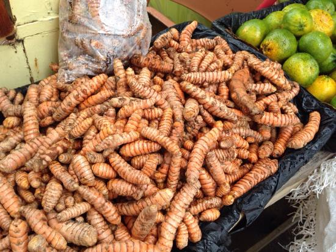

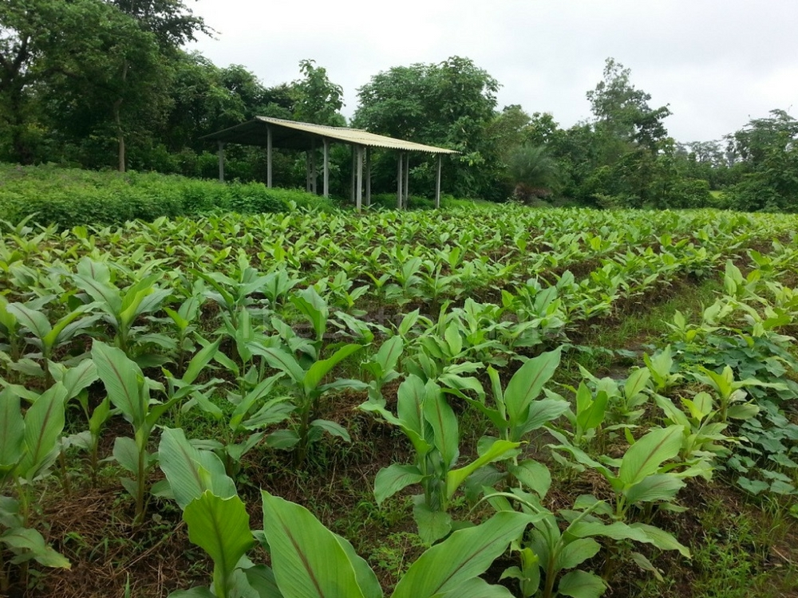

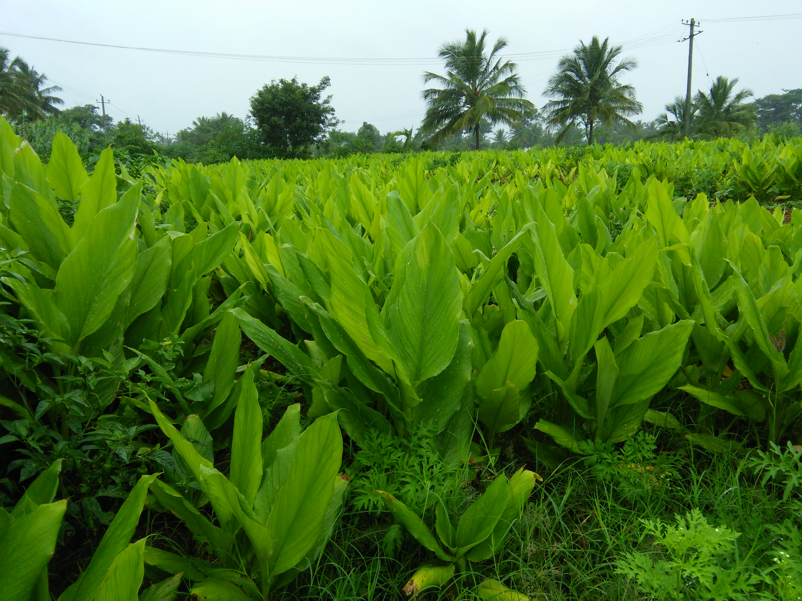
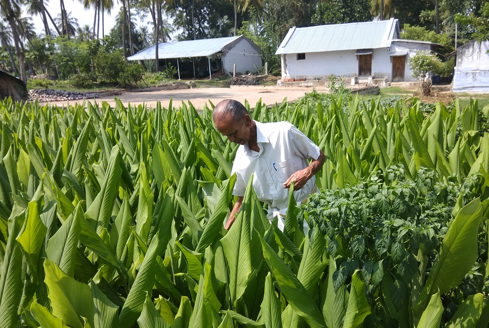

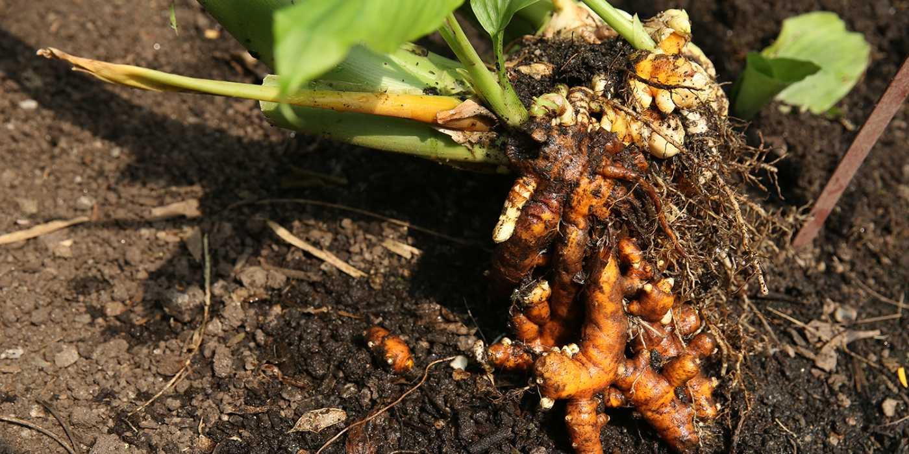
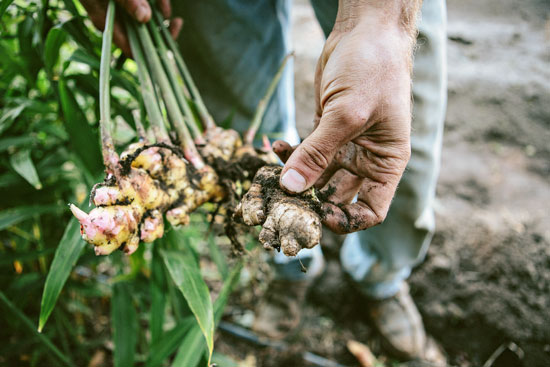
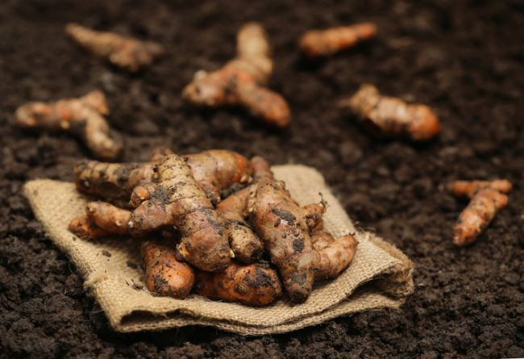
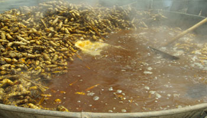
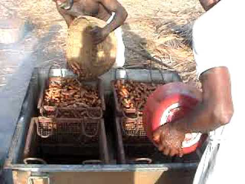
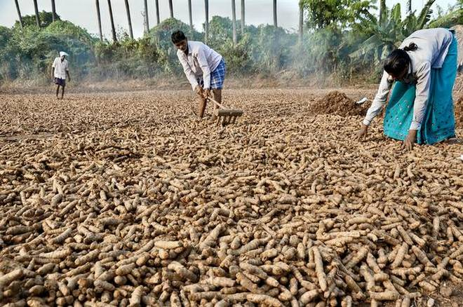
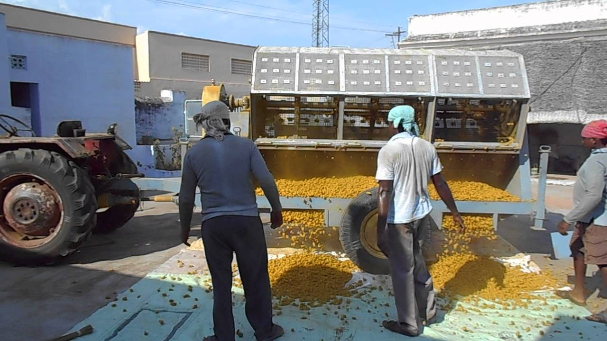
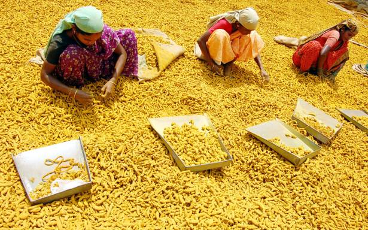
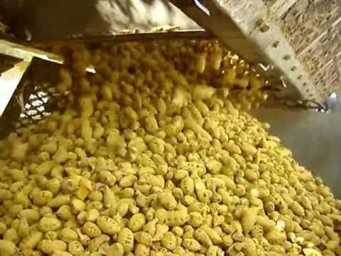